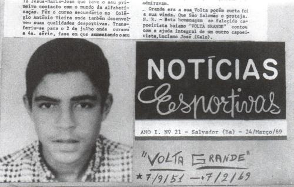

Прощай, Volta Grande
Глава из книги Raimundo Cesar Alves de Almeida — Itapoan — «A Saga do Mestre Bimba»
17 февраля 1969 года, я находился в академии Mestre Bimba, когда пришел мой друг Jorge. Мы всегда обращались к нему по имени в капоэйре (“nome de guerra” — порт. „имя воина“, прозвище, которое имел каждый капоэйрист) Volta Grande. Volta был молодым, высоким, хорошо слаженным парнем, которому недавно исполнилось семнадцать. Он был многообещающим капоэйристом. Он был силён и смел, он был выпускником курса (Curso de Capoeira Regional) и являлся частью группы Mestre Bimba.
Первое, что он сказал мне: «Слушай, Itapoan, меня сегодня лихорадит.»
«Какая у тебя температура?» — я спросил.
„Тридцать четыре градуса“, — ответил он.
Я в шутку сказал: «Вообще-то твоя температура ниже, чем обычно.»
После этого он рассказал, что утром он ходил на работу к отцу Pizinho (Pizinho был одним из наших студентов) и провел там некоторое время работая молотом по куску железа. Он хотел иметь стальные кулаки, как у одного из наших студентов по имени Filhote de Onca. Мы немного поболтали и переоделись в тренировочную форму, чтобы начать занятие. Этим вечером нам нужно было показывать шоу для каких-то французских туристов в академии мастера в Nordeste de Amaralina.
“Сегодня вечером у меня будет вечеринка”,- сказал Jorge. “Я украсил свой дом плакатами на тему капоэйры. Твое имя есть на них, а еще Camisa Roxa, Filhote, Galo… После шоу мы все идем ко мне.”
“Хорошо”, — ответил я.
Мы начали тренировку. Мы поиграли несколько раз, а во время игры в Iuna он сказал, что плохо себя чувствует. Мы положили его на скамейку и попросили Dona Alice (жену Mestre Bimba) приготовить крепкого кофе. С ним такое уже случалось несколько раз, и после чашки кофе ему обычно становилось легче. Canhao, наш студент, который второй год учился в медицинской школе был в тот день с нами. Filhote de Onca тоже был там, а также Xareu, Galo, Alegria и другие ребята.
Когда я потрогал стопы Volta Grande, они были холодными. Я сказал мастеру, что лучше было бы отвезти Volta в больницу, с чем мастер согласился. Когда мы снесли Volta вниз по лестнице, и, когда добрались до Terreiro de Jesus, он начал бредить. Он сказал, что хочет фанту. Он попросил Canhao сделать массаж его ног, потому что они замерзли.
Когда мы оказались в больнице, врач положил его на стол, начал обследовать и сказал, что кровяное давление было нулевым. Мы все уставились на него, после чего доктор сделал повторный замер и сообщил, что Volta Grande умер. Было примерно 7:30 вечера.
Мы стояли там, как идиоты. Мы не знали, что делать. Что сказать его маме? Кто сообщит эту шокирующую новость? Volta Grande был её единственным сыном. У него была одна сестра. Это была очень тяжелая ситуация.
Итак, я, Galo и Filhote de Onca направилсь к дому Volta Grande. Когда мы пришли туда, то увидели плакаты, которые он приготовил для вечеринки, на которых были все наши имена. На плакатах также были стихи. Ему нравилась поэзия, и ему нравилось писать стихи. Нам всем очень нравился один стих, который он написал «Jorge’s World».
Мы постучали в дверь. Его мама открыла дверь, мы вошли в дом и сели. Она смотрела на нас и спрашивала: „Что? Что случилось? Скажите же что-нибудь!“
Мы сидели молча. Я был полностью эмоционально парализован. Volta Grande был не просто человеком, с которым мы тренировались в академии, он был нашим другом, и его мама знала об этом.
Его мама была юристом, кажется догадалась о случившемся. Она посмотрела на нас и сказала: «Jorge, верно?»
После чего Galo рассказал ей, что Volta почувствовал себя неважно, мы отвезли его в больницу и… он не выжил.
Казалось, что она все поняла. Она ничего не плакала и не делала ничего подобного, немного позже мы ушли.
«Что случилось?» — он спросил, не сбиваясь с ритма. Я прошептал ему, что Volta Grande умер.Становилось поздно и мы направились к Amaralina. Мастер добрался туда раньше нас и уже играл на атабаке — большом барабане, который он использовал для презентации Кандомбле, — так он начинал шоу.
Мастер посмотрел на меня с печалью, но больше ничего не спрашивал. Он начал петь очень печальную песню, которая начиналась так:
Olha a Matamba, eh tata embe,
eh olha a Matamba eh tata embe.
Cabocla da Muringanga,
eh tata embe eh olha a Matamba
eh tata embe…
Мы переоделись. Другие ученики хотели в подробностях узнать, что случилось, но нам не хотелось об этом говорить.
Когда мастер закончил часть шоу с Кандомбле, случилась странная вещь: начался такой сильный дождь, которого мы никогда не видели. Начался потоп. Академия наполнилась водой. Иностранцы стояли с подкатанными штанами и с обувью в руках, полностью промокшие. Это было безумие.
Mestre Bimba перестал играть и сказал: „Volta Grande не хотел, чтоб мы начинали без него.“
Мы вышли из академии и пошли в небольшой бар, где рассказали другим ученикам о произошедшем, тем самым дали выход скорби.
Следующим утром Xareu пришел ко мне домой с Mestre Bimba. Он сказал, что удивился появлению мастера у себя дома утром. Он был очень обеспокоен и хотел знать причину смерти Volta. Он также интересовался, как семья Jorge отреагировала.
Мы поехали в морг Nina Rodrigues, который находился по пути в академию. Мастер остался в машине с Xareu, а я пошел во внутрь посмотреть на аутопсию. Когда я зашел внутрь, мне сказали, что вскрытие уже завершилось. Они сообщили, что Jorge умер от отека легких, и, что у него было увеличенное сердце. Я записал все, что они говорили, чтоб потом переспросить у моего дяди, который был врачом.ересовался, как семья Jorge отреагировала.
Я передал остальным то, что мне сказал судмедэксперт, и мы уехали.
Вечером мы поехали на похороны. Было очень печально. Его мама подозвала Camisa Roxa и сказала: «Jorge хотел чтобы на его похоронах пели Samba de Roda.» Да….
Мы сделали, как он хотел, но это было сумасшествием. Camisa Roxa играл со слезами, а другие пытались петь хором.
Вот так Volta Grande — мой друг Jorge,- покинул нас. И Roda de Capoeira Regional никогда не останавливалась, не важно, грустили мы или нет.
На следующий день мы пошли домой к Jorge, и его мама объяснила, почему она так реагировала, когда мы сообщили о смерти ее сына.
Врачи заранее предупредили ее о состоянии сердца сына, и, что он вряд ли доживет до двадцати лет. Зная это, она позволяла делать ему все, что он хотел. Она хотела чтобы он радовался и был счастлив до конца. Это было именно так…
Первоисточник перевода: http://capoeirasol.ru/2012/10/15/volta_grande/
Перевод: Альберт Sol